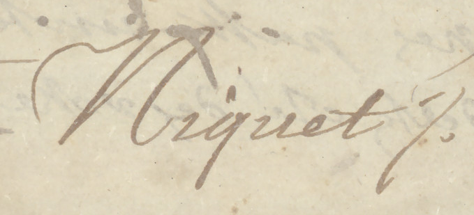
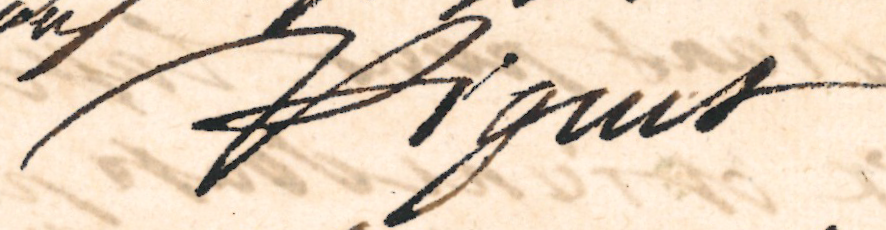
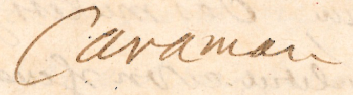
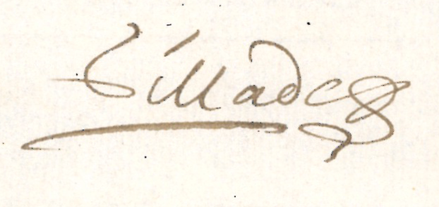
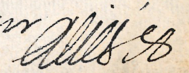
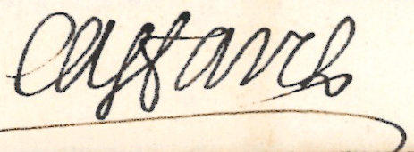
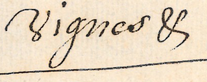
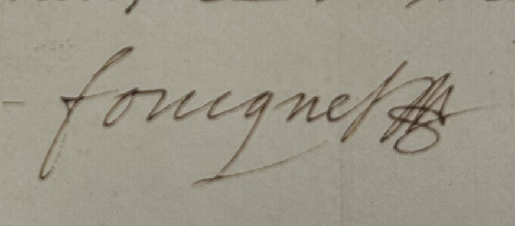

Acteurs du fonds
Ceux qui écrivent le canal
Les correspondances conservées ne racontent pas seulement l’histoire de Pierre-Paul Riquet. Leur étude permet de faire apparaître tout un ensemble d’hommes qui participent à la construction puis à l’administration du canal. Le croisement de ces lettres avec d’autres sources d’archives permet de retrouver leur identité, de préciser leurs fonctions et, lorsque les sources le permettent, de mieux connaître leur parcours. Si certains de ces acteurs sont bien documentés, d’autres n’ont laissé que peu de traces et restent aujourd’hui difficiles à connaître.
Leurs signatures permettent de rapprocher ces acteurs des documents qu’ils ont produits ou validés et de rappeler que derrière chaque lettre se trouve une personne, une fonction et une place particulière dans le réseau administratif du canal.
1609 – 1680
Pierre-Paul Riquet
Entrepreneur et constructeur du canal
Pierre-Paul Riquet occupe une place centrale dans l’histoire du canal et dans les correspondances conservées. Issu du monde des gabelles, il développe progressivement un réseau de collaborateurs et d’hommes de confiance qu’il mobilise ensuite pour conduire son projet de canal.
Jusqu’à sa mort en 1680, il reste le principal destinataire des lettres étudiées. Cette correspondance lui permet de recevoir des informations provenant des différents secteurs du chantier et de suivre l’avancement d’une entreprise répartie sur un vaste territoire.
Sa mort, le 1er octobre 1680, marque une rupture importante. L’organisation du canal passe alors à ses héritiers et devient progressivement plus collective.


1638 – 1714
Jean-Mathias de Riquet
Baron de Bonrepos, fils aîné de Pierre-Paul Riquet
Jean-Mathias est associé aux affaires de son père avant même la disparition de celui-ci. Dès les années 1670, Pierre-Paul Riquet lui confie différentes missions et l’intègre progressivement à la conduite de l’entreprise.
Après la mort de son père, Jean-Mathias participe directement à la poursuite des travaux et à l’administration du canal. Il exerce parallèlement la fonction de président à mortier au Parlement de Toulouse, ce qui contribue à expliquer la place importante prise par ses collaborateurs dans le suivi quotidien des affaires.
Son secrétaire Pierre Caffarel devient ainsi l’un des principaux intermédiaires de cette nouvelle organisation administrative.
Pierre-Paul de Riquet
Comte de Caraman, fils de Pierre-Paul Riquet
Pierre-Paul de Riquet, comte de Caraman, participe avec son frère Jean-Mathias à la gestion du canal après la mort de leur père. L’administration devient alors une coseigneurie dans laquelle les responsabilités sont partagées entre les héritiers.
Sa carrière militaire l’éloigne cependant d’une partie de la gestion quotidienne. Comme son frère, il doit donc s’appuyer sur des intermédiaires capables de recevoir les informations, rédiger les lettres et transmettre les décisions.
Son secrétaire Vigne apparaît à plusieurs reprises dans les correspondances et constitue l’un des relais de cette administration à distance.


Dominique Gillade
Collaborateur de Pierre-Paul Riquet puis directeur général des travaux
Dominique Gillade appartient au groupe des collaborateurs proches de Pierre-Paul Riquet. Leur relation commence dans le cadre des gabelles, avant même le lancement du chantier du canal.
Riquet lui confie progressivement des responsabilités de plus en plus importantes. Gillade devient l’un de ses principaux adjoints et intervient directement dans la conduite de plusieurs secteurs du chantier.
Après la mort de Riquet, son rôle se poursuit. Jean-Mathias le nomme directeur général des travaux du canal. Son parcours montre combien la construction de l’ouvrage repose aussi sur des collaborateurs aujourd’hui moins connus que la figure de Riquet.
Bernard Aliès
Homme de confiance de Pierre-Paul Riquet
Bernard Aliès appartient au cercle des proches de Pierre-Paul Riquet. À partir des années 1670, il intervient comme homme de confiance et prend en charge différentes affaires pour le compte de l’entrepreneur.
Installé notamment à Paris, il constitue un relais précieux pour suivre à distance certaines démarches et transmettre les informations à Riquet. Sa correspondance ne concerne pas seulement les affaires du canal mais fait également apparaître des éléments relatifs à l’entourage et à la famille de Riquet.
Dans les derniers mois de sa vie, Pierre-Paul Riquet confie à Jean-Mathias le suivi des affaires traitées à Paris par Aliès, preuve de la confiance accordée à cet intermédiaire.


Pierre Caffarel
Avocat au Parlement et secrétaire de Jean-Mathias de Riquet
Pierre Caffarel est avocat au Parlement de Toulouse et secrétaire de Jean-Mathias de Riquet. Contrairement à certains autres acteurs du fonds, son parcours est relativement bien documenté.
Après la mort de Pierre-Paul Riquet, il apparaît comme l’un des relais importants de la nouvelle administration du canal. Il participe à la rédaction et à la transmission des correspondances nécessaires au suivi des affaires de Jean-Mathias.
Son cas permet de comprendre la place prise par les secrétaires après 1680. Ils ne se limitent pas à recopier des lettres mais interviennent directement dans la circulation de l’information et dans le fonctionnement quotidien de l’administration.
Vigne
Secrétaire de Pierre-Paul de Riquet, comte de Caraman
Vigne est le secrétaire de Pierre-Paul de Riquet, comte de Caraman. Malgré les nombreuses lettres qu’il a laissées, son parcours reste aujourd’hui mal connu. Les recherches menées n’ont permis de retrouver que très peu d’informations sur sa vie.
Cette absence contraste avec le cas de Caffarel, dont le parcours est beaucoup mieux documenté. Les lettres constituent donc ici l’une des principales traces permettant d’observer l’activité de Vigne auprès du comte de Caraman.
Sa présence dans les correspondances montre pourtant qu’il participe pleinement à la circulation des informations et au suivi des affaires du canal après la mort de Pierre-Paul Riquet.


1615 – 1680
Nicolas Fouquet et Paul Pellisson-Fontanier
Une signature, deux acteurs
Le cas de Nicolas Fouquet montre que la signature d’une lettre ne suffit pas toujours à identifier celui qui l’a réellement rédigée. Une correspondance adressée à Pierre-Paul Riquet porte ainsi la signature de Fouquet, mais l’étude de l’écriture a permis de montrer qu’elle avait été rédigée par son secrétaire, Paul Pellisson-Fontanier.
La comparaison avec d’autres lettres conservées dans le fonds a permis de retrouver de fortes similitudes graphiques et de confirmer cette attribution.
Cet exemple rappelle l’importance du travail archivistique sur les écritures, les signatures et les producteurs. Derrière le nom d’un grand personnage peut ainsi apparaître un secrétaire chargé de rédiger matériellement la correspondance.
Lire les archives autrement
Des signatures aux réseaux d’acteurs
L’étude des correspondances permet de dépasser une histoire centrée uniquement sur Pierre-Paul Riquet. Autour de lui apparaissent des collaborateurs, des proches, des héritiers et des secrétaires qui participent eux aussi à la construction puis à l’administration du canal.
Les signatures reproduites ici ne sont donc pas seulement des éléments graphiques. Elles constituent des indices d’identification et permettent de rapprocher les documents de ceux qui les ont écrits, transmis ou validés.